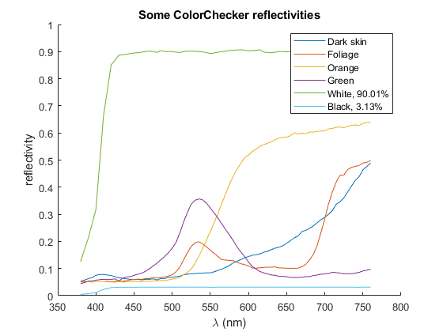

ColorChecker
Navigate to: Home | Alphabetic list | Grouped list | Source code: ColorChecker.m
return selected MacBeth ColorChecker reflectivity spectra
Contents
Syntax
rv = ColorChecker(i)
Input Arguments
- i: scalar or vector double. The index (or index list) of the desired spectra.
Output Arguments
- rv: When i is scalar: A struct with fields name (the name), lam (the wavelength array, 380:5:760), and val (the corresponding reflectivity values). When i is a vector of length > 1, then rv is a cell array of such spectrum structs. i need not be sorted, and need not be unique.
Algorithm
On first call, reads the spectra from ColorChecker.mat and stores them in a persistent variable. Data source: EBU Tech 3355, appendix 4. Subsequent calls will not re-read the .mat file and be much faster. ColorChecker spectra are widely used in the movie industry, and serve as the basis for the TLCI (Television Lighting Consistency Index).
See also
Usage Example
function ExampleColorChecker() idx = [1 4 7 14 19 24]; ccSpectra = ColorChecker(idx); figure(); clf; hold on; leg = {}; for i = 1:length(ccSpectra) s = ccSpectra{i}; plot(s.lam, s.val); leg{end+1} = s.name; %#ok<AGROW> end legend(leg); xlabel('\lambda (nm)'); ylabel('reflectivity'); title('Some ColorChecker reflectivities'); end